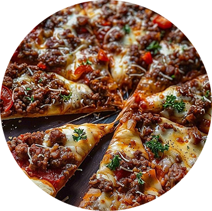
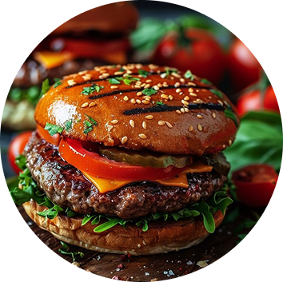
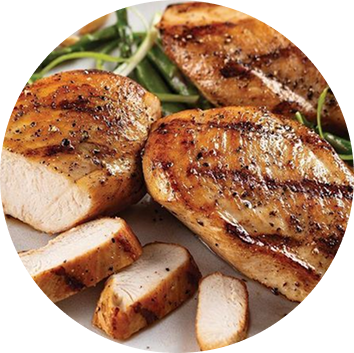
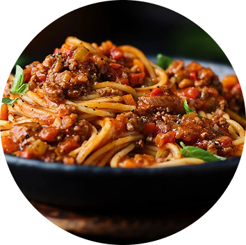

FOOD
our menu
Beef Pizza
Social media can also be used so share interesting facts, true stories, and other

Beef Burger
Social media can also be used so share interesting facts, true stories, and other

Chicken Steak
Social media can also be used so share interesting facts, true stories, and other

Spaghetti
Social media can also be used so share interesting facts, true stories, and other
